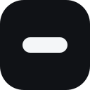

FLUIDBAR / ICON STUDY
图标，简单一点。
现用图标
24 款 SVG，四组不同方向：简洁几何、字母字标、空间负形、柔和色彩。点选一款，对比大图和 16 / 24 / 32px 的实际显示效果。
这里只作候选预览，尚未替换官网或软件图标。选择后可以直接告诉我编号。

01 · 单岛
下载这款 SVG ↗
先看小尺寸下是否清晰，再看放大后的细节。
FLUIDBAR / ICON STUDY
24 款 SVG，四组不同方向：简洁几何、字母字标、空间负形、柔和色彩。点选一款，对比大图和 16 / 24 / 32px 的实际显示效果。
这里只作候选预览，尚未替换官网或软件图标。选择后可以直接告诉我编号。

先看小尺寸下是否清晰，再看放大后的细节。